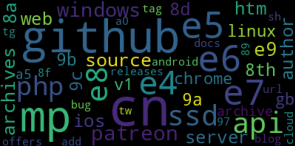

Built a multilingual topic modeling pipeline that clusters 12,367 Telegram channels across 100+ languages using BERT embeddings and UMAP, identifying 96 distinct topics. Achieved 20% successful topic labeling despite computational constraints processing <10% of the dataset.
Introduction
Telegram has grown into one of the world's largest social platforms, attracting over 800 million users with its promise of privacy and minimal moderation. But this same lack of oversight has made it a haven for criminal organizations, extremist groups, and other actors operating outside mainstream platforms.
For researchers, journalists, and law enforcement, understanding what's being discussed on Telegram is crucial. But there's a major obstacle: Telegram is incredibly multilingual. English channels are a minority. The platform hosts significant communities in Russian, Persian, Uzbek, Arabic, Spanish, and dozens of other languages.
If you want to understand the full scope of activity on Telegram, you need a multilingual approach. Manual analysis is impossible at this scale. As such, topic modeling seems like a viable approach.
The Challenge: Topic Modeling on Short, Multilingual Text
Topic modeling is a well-established technique for discovering themes in large text collections. However, it's notoriously difficult with social media data for two reasons:
- Short texts: Social media posts are brief, and topic modeling typically needs substantial text to work well
- Multiple languages: Most topic modeling approaches work best on a single language
The existing work on Telegram topic modeling, like the TGDataset project, used LDA (Latent Dirichlet Allocation) but was limited to English-only channels. I wanted to go further: analyze all channels, regardless of language, in one unified approach.
Our Solution: A Multilingual Embedding Pipeline
I developed a pipeline that combines multilingual BERT embeddings with dimensionality reduction and density-based clustering to identify topics across languages.
The Pipeline
1. Data Collection
I started with the TGDataset. Given computational constraints, I had to limit the scope:
- Extracted first 100 messages from each channel
- Processed ~10% of the full dataset (12,367 channels)
- Tokenized to 512-character maximum (BERT's limit)
2. Multilingual Embeddings with BERT
To handle multiple languages, I used multilingual BERT (m-BERT). This pre-trained model understands 104 languages and can create meaningful embeddings for text in any of them.
- Generated embeddings for each message
- Averaged them to create a single embedding representing the entire channel
3. Dimensionality Reduction with UMAP
BERT's 768 dimensions are great for semantic richness but terrible for clustering. Used UMAP to:
- Reduce to 10 dimensions
- Preserve local and global structure
- Avoid the curse of dimensionality
Tested multiple neighbor parameters (n=2, 10, 50, 100) to find optimal clustering.
4. Clustering with HDBSCAN
With the reduced embeddings, I applied HDBSCAN, a density-based clustering algorithm. Unlike traditional clustering methods, HDBSCAN:
- Doesn't require specifying the number of clusters upfront
- Can identify noise/outliers (channels that don't fit any topic)
- Creates clusters of varying densities
I set a minimum cluster size of 15 channels to ensure we only kept meaningful groups.
5. Understanding the Clusters with TF-IDF Word Clouds
To interpret what each cluster represented, I:
- Extracted the top 50 terms from each cluster using TF-IDF
- Generated word clouds to visualize the most important terms
- Translated non-English terms to English using the
deep-translatepackage
This gave us a way to "see" what each topic cluster was about.

Figure: Word cloud visualization of a topic cluster
The Results: How Good Is This Approach?
Clustering Performance
| HDBScan neighbours (n) | Clusters Found | Unclustered | Largest Cluster |
|---|---|---|---|
| 2 | 156 | 5,432 | 1,287 |
| 10 | 96 | 2,005 | 3,646 |
| 50 | 42 | 1,892 | 4,589 |
| 100 | 38 | 2,145 | 5,012 |
Optimal setting: n=10 neighbors gave the most reasonable clustering with 96 distinct topics.
Topic Distribution
3 Largest Clusters:
- Cluster 1: 3,646 channels (85% Russian)
- Cluster 2: 1,323 channels (93% Uzbek)
- Cluster 3: 1,136 channels (94% Persian - Afghan news focus)
Language Mixing:
- 15 out of 96 clusters showed clear multilingual mixing
- 81 clusters were dominated by a single language
- This suggests limited cross-language semantic alignment in m-BERT
Manual Labeling:
- Successfully identified topics for 30 clusters
- Covered ~20% of all channels (2,458 channels)
- Remaining clusters had unclear or noisy word patterns
Performance Metrics
| Metric | Value |
|---|---|
| Channels processed | 12,367 |
| Messages per channel | 100 |
| Embedding dimension | 768 → 10 |
| Clusters identified | 96 |
| Topics successfully labeled | 30 (20% of channels) |
| Processing time per channel | ~3-5 seconds |
| Total dataset processed | <10% of full archive |
Key insight: The approach works, but is fundamentally limited by computational constraints and the cross-language capabilities of m-BERT.
All code is available on GitHub.